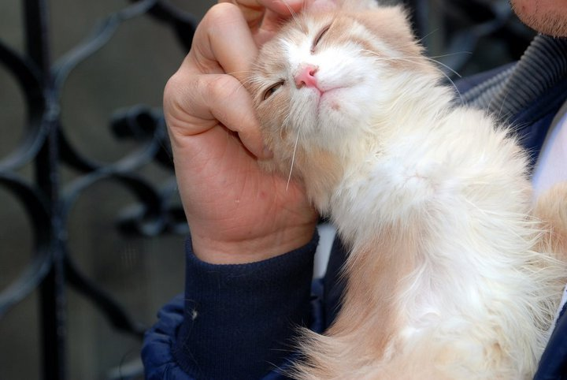

Melihat dari perilaku kucing yang ada saat ini, kucing liar yang merupakan nenek moyang kucing peliharaan diperkiraan berevolusi pada iklim gurun. Kucing senang dengan suasana hangat dan sering tidur di bawah hangatnya sinar matahari. Kotorannya biasanya kering dan kucing lebih suka menguburnya di tempat berpasir. Kucing dapat mematung, tidak bergerak cukup lama terutama ketika sedang mengintai mangsa atau bersiap untuk menerkam. Di Afrika Utara masih ditemukan kucing liar yang mungkin berkerabat dekat dengan nenek moyang kucing peliharaan saat ini.